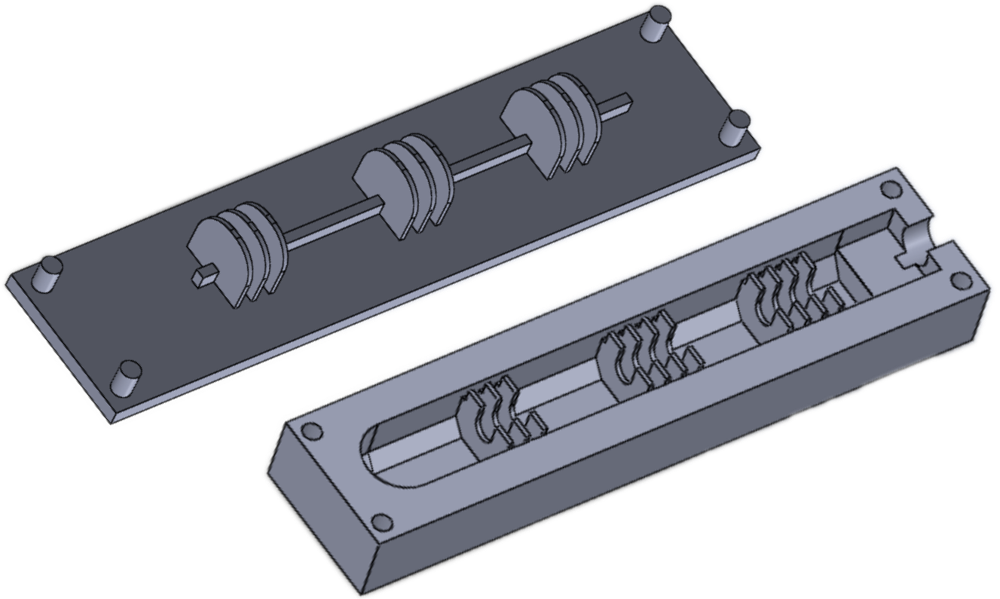
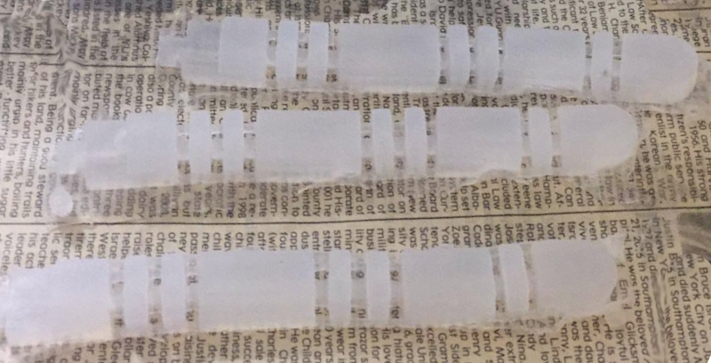
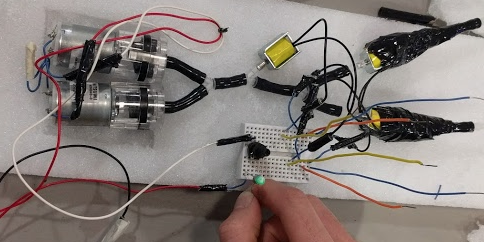
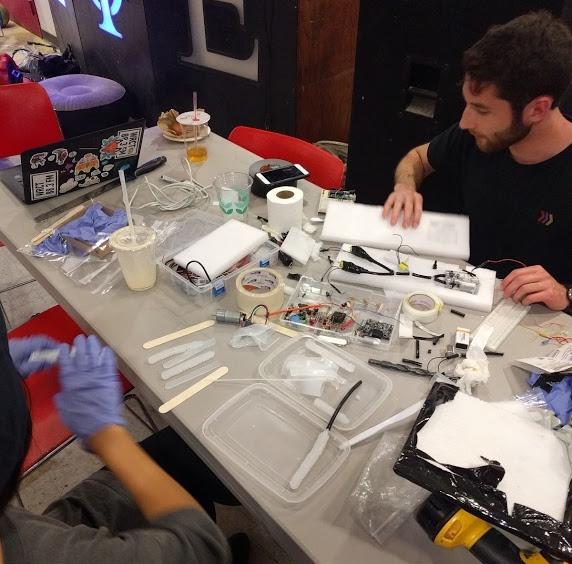

Fingbot!

Advised by professor Chris Atkeson and Akihiko Yamaguchi, our group of 6 set out on a semester long project to fabricate a soft robotic actuator. Our intention was to build a prototype finger assist that could be used to help elderly people with limited grip strength hold and move objects in their daily life, and explore and learn about soft robotics.
As the only mechanical engineer on a team with two electrical engineers, two computer scientists, and a human-computer interactionist, a lot of my responsibilities were in fabrication.
While there are four basic finger grip types (full fist, hook fist, straight fist, and platform), we chose to model after the full fist, as it required the most amount of "joints," and accordingly would be an interesting challenge to pursue.

From there, we began fabrication of our mold. It took several iterations to reach this two part 3D printed plastic mold. Our biggest challenge was creating the dimensions we needed in the internal cavities, as spotting bubbles in ecoflex can be fairly challenging.

Several attempts at molding the epoxy later, we learned what techniques work, and what don't, and yielded three suitable actuators!

After sealing together the two halves of the soft actuators and testing their airtightness, it was time to build the array of valves that would actuate the actuator. Using a variety of tubing, air pumps, solenoid valves, and an Arduino, I began building an array of valves so that the soft actuator could be inflated to a specified pressure at the push of a button, and released at the button's depress.

After our computer engineer group mates finished the software part of our system, it was time for us to integrate it all together. As with any good project, almost nothing went right when we first tried getting it all working. We ended up needing to find a new tube of a slightly smaller diameter, and needed a faster drying silicone spread to seal parts of the solenoid valves.

Finally, we got it all working! More info on the project, and the presentation we gave in class, can be found here.